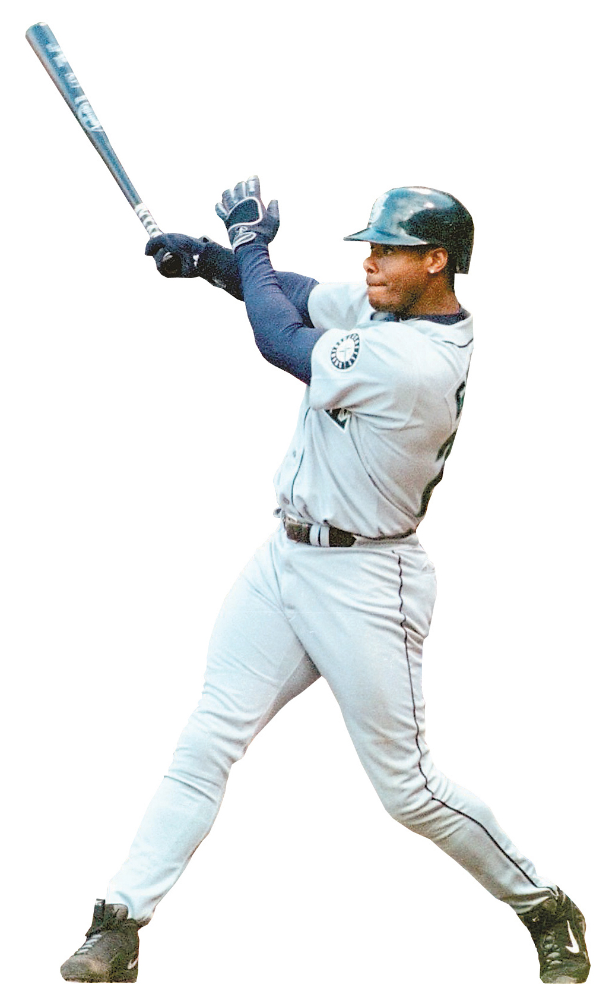

HALL OF FAME | KEN GRIFFEY JR. | CLASS OF 2016
MEASURING GREATNESS
22 years | 2,671 games | 2,781 hits | 1,836 RBI
Numbers don’t begin to tell the story of Ken Griffey Jr.’s Hall of Fame career. They don’t tell you how graceful The Kid chased down balls in the Mariners' outfield, they don’t paint a picture of his infectious, trademark grin, and they certainly can’t define what this legend meant for the city of Seattle. But, the numbers do make one thing clear: No. 24 was No. 1 in baseball for a long time.
630
HOME RUNS
- Griffey hit 40 or more home runs in seven seasons (including five straight from 1996-2000). Only seven players have accomplished that feat.
- 530 of his 630 homers came from the No. 3 spot in the lineup.
- Griffey homered against 407 different pitchers. The most victimized was David Wells, whom Griffey homered off of eight times.
- He played in parts of four decades, one of only 29 players to do so.
Griffey's Home Runs by Season
Scroll through the graph below to see how Ken Griffey Jr. fared in each of his 22 seasons.
With Mariners
With Cincinnati Reds; Chicago White Sox
<
<% })}; %>
>
Browse to explore some of Ken Griffey Jr.'s most memorable moments.
<% var notes = {};
json.GriffeyStats_notes.forEach(function(item) {
if (!notes[item.Note]) notes[item.Note] = [];
notes[item.Note].push(item);
});
for (var n in notes) {
var note = notes[n];
note.forEach(function(item) { %>
<%= item.Year %>
<%= item.Note %>
What if? Griffey vs. all-time home run leaders
Take a look at Ken Griffey Jr.'s career home-run trajectory and how it compares to the other five sluggers ahead of him on the all-time list.
<% var players = {};
json.hr_leaders.forEach(function(item) {
if (!players[item.Name]) players[item.Name] = [];
players[item.Name].push(item);
});
var colors = ['grey', 'red', 'blue', 'green', 'purple', '#52C4B1'];
var index = 0;
%>
<% for (var p in players) {
var player = players[p];
player.forEach(function(item) { %>
 <% index++; }); } %>
<% index++; }); } %>
<%=item.Name%>
<%=item.hr%>
Career years
A
B
C
D
A
First 4 years (1989-1992)
From early in his career, it was apparent that Ken Griffey Jr. was going to be something special. Griffey amassed 87 home runs in his first four years — all before his 23rd birthday, averaging nearly 22 home runs per season. While impressive, the totals were nowhere near as impressive as what was to come.
B
Next 8 years (1993-2000)
Then the power spike came. It started when Griffey hit 45 home runs in 1993, and continued for the next seven years. Over that span, Griffey averaged 44 home runs per season, a feat made more impressive by the fact that he played in only 72 games in 1995 because of injury. In 1997 he set a career-high with 56 homers, a feat he would match the following year. By the time that eight-year run was over, As the graph shows, Griffey's pace put him ahead of that set by the all-time home run leaders.
C
Next 4 years (2001-2004)
But then injuries struck. Over the next four years, Griffey played in fewer than half of his team's games as he battled injuries to his knees, ankle, hamstrings and shoulder. On top of missing valuable playing time, the injury struggles also sapped him of much of his power. By the time he finally began to regain health in 2005, he had fallen well off the pace.
D
Final 7 years (2004-2010)
Finally healthy, his power began to pick back up, but he never regained the heights he had previously reached. Even if he had, there might simply have not been enough time for him to put the home run record in danger. Instead, when he finally retired in June of 2010, he left the baseball world as one of the undisputed all-time greats. But it's hard not to look back at injuries and wonder "what if?"
Griffey's Injuries
Ken Griffey Jr. battled injuries for a large part of his career. As a result, he was placed on the disabled list 12 times, forcing him to miss significant playing time. Griffey played in fewer than 130 games in 11 of his 22 total seasons. See a rundown of his injuries and time missed by tapping on each injury.
-
<% for (var i in injuries) {
var injury = injuries[i];
injury.forEach(function(item) { %>
- <%= item.description %> <% }); } %>

<% for (var i in injuries) {
var injury = injuries[i];
injury.forEach(function(item) { %>
<% }); } %>
<%= item.injury %>
Cover Boy
Ken Griffey Jr. graced the cover of Sports Illustrated nine times. Check out each one below:
<% for (var i = 1; i < 10; i++) {
if (i == 2) { %>
 <% }
else { %>
<% }
else { %>
 <% }
}; %>
<% }
}; %>
<% var mags = {};
json.GriffeyStats_si.forEach(function(item) {
if (!mags[item.id]) mags[item.id] = [];
mags[item.id].push(item);
}); %>

1990
Griffey’s first S.I. cover is also his most iconic. The magazine calls him “Seattle’s 20-year-old wonder” and likens him to Willie Mays.

<%= item.Year %>
<%= item.Description %>
Reporting and production: Nick Sullivan, Sean Quinton
Photo illustration: Rich Boudet
Development: Elif Koc, Audrey Carlsen, Thomas Wilburn
Photo illustration: Rich Boudet
Development: Elif Koc, Audrey Carlsen, Thomas Wilburn
<%= t.include("./partials/_ad.html", { type: "bannerBottom" }) %>